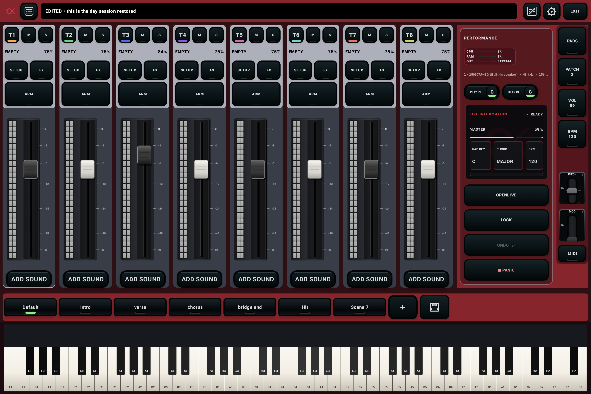
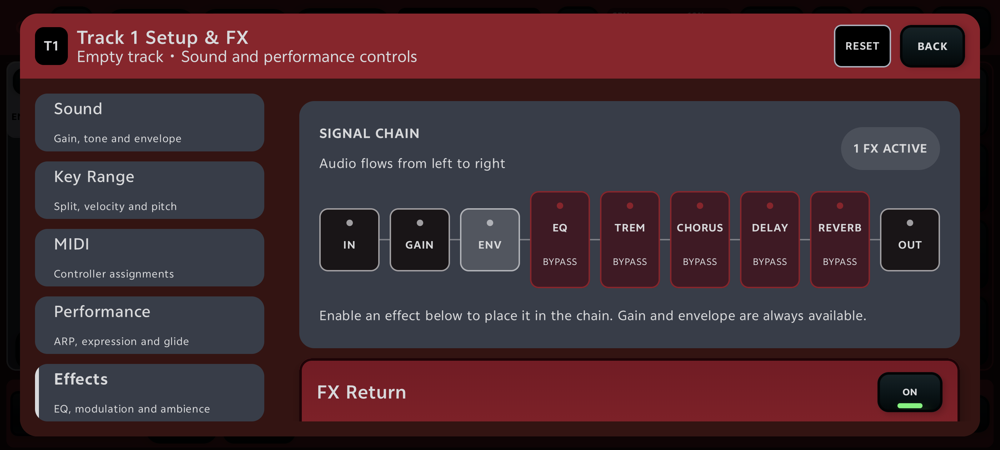

ORGANIZE
Build the set
Arrange songs as patches inside setlists, in the exact order you’ll play them.
Build setlists, layer instruments, shape effects, and move through every song with confidence. OpenKeys turns your Android device into a focused performance workspace.

OpenKeys keeps preparation structured and performance simple. Build once, then play the show without hunting through menus.
Arrange songs as patches inside setlists, in the exact order you’ll play them.
Layer SoundFonts, define key ranges, balance the mixer, and tune each effect chain.
Turn verse, chorus, bridge, and ending states into scenes you can recall instantly.
Use MIDI controls, lyrics, scene cues, and performance lock to keep your hands focused.
Every channel is a playable layer. Split the keyboard, transpose, shape velocity and sustain, then build a musical balance with effects that belong to the sound.

Recall complete track states for every song section, with smooth transitions and optional MIDI triggers.

Bring swells, pads, and transitions into the same performance flow.
Bind scenes to song sections so your sounds and notes move together.
See the state of your rig at a glance. Lock edits before the first note. Keep Panic close. Monitor audio health while you play the busiest part of the set.
Follow a 15-minute first-performance course, search every control, or jump straight to the topic you need. The manual uses real phone and tablet screenshots and works offline.
Build one playable piano-and-pad patch.
OPEN GUIDE →OpenKeys brings your sounds, songs, scenes, and controls into one focused Android performance workspace.
Open the quick start ↗